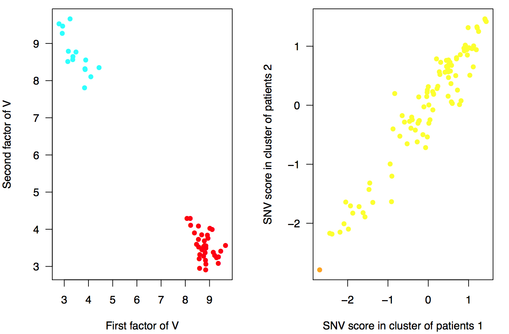

Overview
After running the main function of cNMTF, score.cnmtf you have a workspace with the consensus clusters of patients and SNV scores. In this section we will compare the SNV scores between clusters to observe the relative importance of each SNV on a trait. Those SNVs with high delta score, \(\Delta \Omega\), will be prioritised for further analysis:

The delta SNV score
In our results, we can expect clusters of patients enriched either in cases or controls because we are integrating \(V_o\). The difference of SNV scores between the cluster of cases and the cluster of controls is calculated for the \(s\)-th SNV as \(\Delta \Omega_{s} = \Omega_{s,2} - \Omega_{s,1}\).
The function analyze.cnmtf will read the clustering results of your experiment(s) and calculate the delta scores:
library("igraph")
library("ade4")
library("ComplexHeatmap")
library("VennDiagram")
analyze.cnmtf ( trait.project = "test", #Trait under analysis
name.exp = c("my_experiment", #Experiment under analysis
work.dat = "./test/", #Folder with the results of score.cnmtf
alpha.cnmtf = 0.005, #Significance level of the scores
d.conf = NULL, #Optional. Confounder variables.
snps.known = NULL, #Optional. List of SNVs associated with the disease
snps.known2 = NULL, #Optional. A second list of SNVs.
tmap = NULL) #Mapping of SNPs to genes, chr and genomic position
This function performs the following tasks:
- Assesses the significance of the delta scores.
- Creates Manhattan plots for the dispersion of delta SNV scores.
- Computes Logistic Regression Models (LRMs) for the same set of variants.
- Compares the prioritised variants of cNMTF and LRMs using Venn diagrams.
The arguments for this function are explained below.
Significance of the delta scores
In the previous section, we generated 100 randomisations of your phenotypes. These randomisations will define the null distribution of \(\Delta \Omega\) in your data. Here, we set a significance level, alpha.cnmtf = 0.005, and prioritise variants in the tails of the distribution. Thus, cut-off points at \(( \frac{\alpha}{2}, 1 - \frac{\alpha}{2} )\) are obtained from the cumulative distribution function.
Optional arguments
The function analyze.cnmtf will also fit a LRM for each variant to explain the status of the patient. As an option, you can provide a dataframe of patients by confounder variables to correct the results of the LRM (d.conf). You can provide two lists of variants (e.g., SNVs known to be associated with the outcome) and the function will highlight those variants in the Manhattan plots (snps.known and snps.known2 will be coloured in black and green, respectively). The list of variants provided in snps.known will also be included in Venn diagrams comparing LRMs and cNMTF results.
Main outputs
In the working directory work.dat you will find three main files. The first file, delta_results_my_experiment.pdf contains Manhattan plots for the dispersion of delta SNV scores and the p-values from LRMs.

Figure. Manhattan plots for the p-values from LRM (left) and delta SNV scores from cNMTF (right). Variants are ordered according to their chromosomal location. Variants beyond the significance cut-offs (dotted lines) are prioritised by both methods, cNMTF and LRM.
The second file, cluster_results_my_experiment.pdf contains dispersion plots for the clusters of patients, variants and the SNV scores.

Figure. Clusters of patients (left) and SNV scores from \(\Omega\) matrix (right). Patients are coloured by their outcome (red: cases, blue: controls). The variants in the second plot are coloured by their minor allele frequency (MAF) (red: rare (MAF < 0.01), orange: low-frequency (0.01 < MAF < 0.05), yellow: common variants (MAF > 0.05)) .
The third main file, score_results_my_experiment.RData is a workspace containing the set of prioritised variants. We will use this file to create an output table of annotated variants for your analysis.
Prioritised variants
In this final step we use the function annotate.results to map the variants to genes and add their functional annotations:
library("RDAVIDWebService")
library("biomaRt")
t.res = annotate.results( name.exp = "my_experiment", #Define experiment id
work.dat = "./test/", #Working directory
add.david.annotations = TRUE, #Use DAVID web service
email.david = "myemail@account.com", #Email registered in DAVID.
add.ensemble.conseq = FALSE, #Add SNV consequences from ENSEMBL
tmap = tmap, #Mapping of SNPs to genes, chr and genomic position
file.LD = "./test/fileLD.RData", #Workspace with pairwise LD
ld.tao = 0.8 #Treshold of LD
snps.known = NULL, #Optional. List of known associations.
snps.known2 = NULL, #Optional. A second list of SNVs.
)
#Extract table of prioritised variants
t.snvs = t.res[[1]]
The annotations are retrieved from the DAVID web service using functions from the library RDAVIDWebService (Fresno et al., 2013). If you want to use their web service you must register your email account(email.david), otherwise you can omit this step: add.david.annotations = FALSE.
Other optional fields to be included in the final table of prioritised variants are:
- The SNV consequences from ENSEMBL,
add.ensemble.conseq = TRUE
- A list of SNVs in high linkage-disequilibrium with the prioritised variant. You must set the threshold
ld.tao = 0.8 to search these SNVs within the same gene region.
> t.snvs
snp dscore known entrezgene pvalue trait ID Gene.Name OMIM_DISEASE
1 rs9568238 2.605395 - 5925 0 test 5925 RB1 109800~Bladder cancer
2 rs4238327 -3.507768 - 4734 0 test 4734 NEDD4 -
KEGG_PATHWAY GOTERM_BP_DIRECT
1 hsa04110:Cell cycle,hsa05161:Hepatitis B GO:0000075~cell cycle checkpoint
2 hsa04120:Ubiquitin mediated proteolysis GO:0002250~adaptive immune response
The function annotate.results prints the following tables in work.dat:
prioritised_snvs_my_experiment.csv: The table of prioritised variantsprioritised_genes_my_experiment.txt: The set of mutated genes and their prioritised variants.enrichment_analyisis_test.txt: Enrichment analysis from DAVID web service for the mutated genes.
This is the end of the documentation for cnmtf package. A full script concatenating these functions is presented here.
You are very welcome to submit any query by contacting the corresponding author and follow the development of this package in Github.